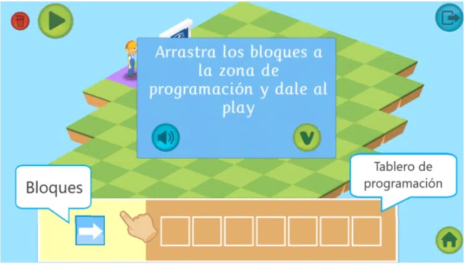
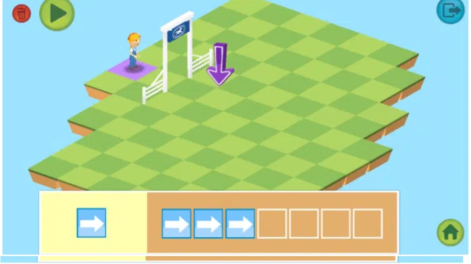
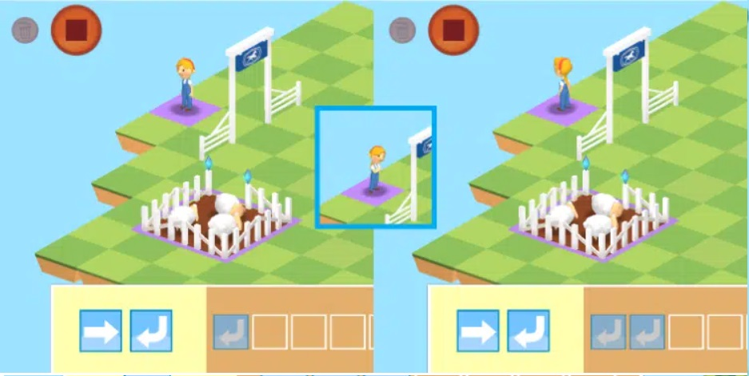

Desarrolla la siguiente actividad en la plataforma Scratch, sigue el paso a paso de las instrucciones.
En la siguiente imagen observa el bloque de programación que contiene la orden de dar un paso hacia la derecha. Si lo pulsamos no pasará nada, tenemos que mandárselo a la máquina, para que pueda ejecutarse el movimiento; es decir, tenemos que mandarlo al tablero de programación. Arrastra la flecha de la dirección del movimiento hasta el tablero de movimientos y observa lo que sucede.

Hay diferentes tipos de movimientos en la programación, pero los más básicos son: hacia delante, hacia atrás, hacia la derecha y hacia la izquierda. Aunque no siempre podremos utilizarlos todos, depende de la máquina que programemos. Por ejemplo, si construimos un robot que solo puede andar hacia delante y hacia atrás, no podremos utilizar bloques de movimiento hacia los lados. En esta actividad, tenemos un bloque que ordena dar un paso hacia delante y, si nos fijamos en la imagen, sabemos que la niña debe avanzar al cuadro que señala la flecha. La niña está colocada de forma que mira al cuadro, es decir, no tendría que girar para llegar a él, solo caminar hacia delante. Además, si contamos podemos ver que tiene que caminar por encima de 3 cuadros, incluido el de destino.
Realiza la programación colocando 3 bloques de “avanza hacia delante” en el tablero de programación. Así:

Además de los bloques de movimiento, podemos encontrar bloques de giro, ¿se te ocurre por qué? Por ejemplo, en el caso de nuestro juego manejamos a una niña, por lo que no tiene sentido que se mueva hacia los lados. Cuando las personas queremos movernos hacia la derecha o la izquierda, giramos el cuerpo y andamos hacia delante. Si no incluimos bloques de giro en la programación de personajes o máquinas que imitan a los seres vivos, el movimiento no se vería natural. Normalmente, se utilizan dos tipos de bloques de giro: giro hacia la derecha y giro hacia la izquierda. Para comprenderlo, observa qué sucede con la niña si la ordenamos girar: Los bloques de giro también nos permiten utilizar menos bloques de movimiento, es decir, podemos conseguir un movimiento hacia la dirección que queramos girando y utilizando únicamente el bloque de avanzar hacia delante. Eso es justo lo que tenemos que hacer para resolver la siguiente situación. La niña quiere llegar al corral de las ovejas, así que probaremos la programación de la imagen. Según los bloques que hay colocados, primero avanzará 3 cuadros hacia delante, luego girará a su derecha y volverá a avanzar hacia delante hasta llegar justo a la puerta del corral.
¡Ánimo, vamos a intentarlo!
